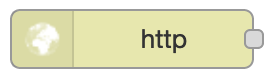

3.15.1. Voorbereiding#
Lees als voorbereiding op de NodeRed-opdrachten eerst onderstaande tekst. Doe dit bij voorkeur met een geopende versie van NodeRed, zodat je de verschillende onderdelen direct kunt vinden en uitproberen.
Nodes en knopen: om verwarring te voorkomen gebruiken we in deze opdrachten het woord “knoop” voor een IoT-knoop, en “node” voor een NodeRed-node.
Handleiding en video’s
De volgende Engelstalige video’s kunnen je helpen bij dit materiaal:
NodeRed Fundamentals: https://www.youtube.com/watch?v=3AR432bguOY
NodeRed export en import: https://www.youtube.com/watch?v=V0SmNcIYCtQ
Officiële gebruikershandleiding (Engelstalig):
NodeRed first flow: https://nodered.org/docs/tutorials/first-flow
NodeRed concepten: https://nodered.org/docs/user-guide/concepts
NodeRed editor, met video’s: https://nodered.org/docs/user-guide/editor/
Deze gebruikershandleiding bevat veel nuttige details voor een handig gebruik van NodeRed.
Opmerking: de video’s zijn Engelstalig, en sommige hebben een vrij hoog tempo. Om een video beter te kunnen volgen kun je met de YouTube tandwiel-knop (i) het tempo van de video aanpassen (bijvoorbeeld 0.75); (ii) de automatische ondertiteling inschakelen; en (iii) de automatische vertaling inschakelen (“knooppuntrood”). En je kunt een video altijd stil zetten en opnieuw afspelen.
3.15.1.1. Nodes en flows#
{kind=link}
Fig. 3.8 NodeRed http flow-voorbeeld#
Een flow in NodeRed bestaat uit een netwerk van nodes en verbindingen. Het aansluitpunt (bolletje) aan de linkerkant van een node is de input. Een node zonder aansluiting links is een input-node, met een externe input, bijvoorbeeld een http-request. De outputs staan aan de rechterzijde van de node. Een node zonder aansluiting rechts is een output-node, met een externe output, bijvoorbeeld een http-response.
Een NodeRed-toepassing kan uit meerdere flows bestaan: elke flow heeft een eigen pagina (tab).
figuur |
naam |
soort node |
 |
http-input-node |
input |
http-output-node |
output |
|
template-node |
in-out |
Hoe werkt een flow? Als een node een bericht (message) krijgt via de input, dan voert deze node daarop een bewerking uit, en genereert één of meer messages naar de output(s). Deze output is weer verbonden met de input van een andere node; of de node is een output-node, met een externe output.
Voor het bovenstaande flow-voorbeeld: (i) de http-input-node ontvangt een http-request als
de http-method gelijk is aan get en het URL-pad gelijk is aan /hello.
Deze http-input-node stuurt dan een message met dit request naar
(ii) de template-node hello.html.
Deze genereert de bijbehorende output: een html-document,
en stuurt een message met dit document naar
(iii) de http-output-node, die uit de message de bijbehorende response samenstelt.
Deze node stuurt de response naar de afzender van het http-request.
3.15.1.2. NodeRed UI#
{kind=link}
Fig. 3.9 NodeRed user interface#
In het NodeRed user interface vind je helemaal bovenin de Deploy-knop en het “hamburger” menu (drie streepjes). Daaronder, van links naar rechts:
het node-palette. Uit dit palette selecteer je nodes die je wilt gebruiken.
Er zijn onder andere input-nodes (met een bolletje rechts), output-nodes (met een bolletje links), en function-nodes (met links en rechts een bolletje). Er zijn nodes voor allerlei protocollen, bijvoorbeeld: HTTP, TCP, MQTT. Er zijn ook nodes voor communicatie met toepassingen als bijvoorbeeld Twitter.
het flow-venster. Dit bestaat uit verschillende flow-tabs.
Met “+” maak je een nieuwe flow-tab aan.
Door double-click op de flow-naam krijg je het configuratie-venster voor deze flow te zien. Hiermee kun je de flow hernoemen, tijdelijk uitschakelen (disable), of verwijderen (delete).
de info/debug/dashboard-sidebar
de info-tab geeft informatie over de geselecteerde node in het flow-gedeelte.
de debug-tab geeft de debug-output van de huidige flow, of van alle flows.
via de dashboard-tab kun je de UI-instellingen van het dashboard veranderen.
In het FRED-venster vind je helemaal links de FRED-sidebar; met het pijltje linksonder maak je deze (on)zichtbaar.
De volgende oefeningen zijn bedoeld om vertrouwd te raken met het user interface. Deze oefeningen hebben geen effect op de flows zelf.
Oefenen met het NodeRed interface
klik op het hamburgermenu, en zoek de instellingen voor:
het (on)zichtbaar maken van de sidebar (info/debug/dashboard)
het importeren van flows (vanuit het Clipboard)
zoek in het palette:
HTTP input-node
MQTT output-node
Twitter output-node
voeg een nieuwe flow-tab toe (via “+”)
hernoem deze tot “Test-flow”
(alleen voor FRED):
maak de FRED-sidebar (links) onzichtbaar en weer zichtbaar
3.15.1.3. Dashboard-nodes installeren#
De dashboard-nodes zijn niet altijd beschikbaar in het node-palet links.
Als je FRED gebruikt, dan installeer je de dashboard-nodes als volgt:
selecteer in de FRED-zijbalk (helemaal links): Tools-> add or remove nodes
type in het zoekveld: dashboard
vink aan: Dashboard (a set of dashboard nodes for NodeRed).
Voor een normale NodeRed-installatie gebruik je de volgende stappen:
selecteer hamburger-menu (rechts) -> Manage Palette
selecteer de tab Install
type in het zoekveld: dashboard
klik op “install” voor node-red-dashboard (A set of dashboard nodes for Node-RED)
na deze installatie zijn de nodes in het palet links beschikbaar.